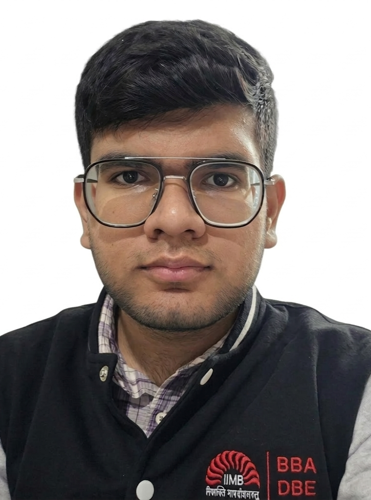

Roll No. 25120119
BBA DBE · IIM Bangalore & BSc Mathematics · JC Bose University
Bridging business acumen with analytical thinking.
I am a dual-degree student pursuing BBA DBE at IIM Bangalore and BSc Mathematics at JC Bose University YMCA, Faridabad simultaneously. I bring a unique blend of business strategy and quantitative thinking to everything I do.
I am actively engaged in case competitions, volunteering, and web development, constantly looking to apply classroom learning to real-world challenges.
IIM Bangalore · 2025
Pursuing business strategy, entrepreneurship, and digital business management at one of India's premier management institutions. Actively participating in case competitions and business clubs.
JC Bose University of Science & Technology, YMCA · Faridabad · 2025–Present
Pursuing a parallel degree in Mathematics, strengthening analytical and quantitative foundations to complement business studies.
2024 · 78%
Completed senior secondary education. Appeared in JEE Main achieving a 95 percentile in Mathematics.
DAV Public School, Sector 14, Faridabad · 2022 · 92%
Secured 92% in the All India Secondary School Examination, with distinction in Mathematics and Science.
Participated in several case competitions applying frameworks like 5 Whys, People-Process-Technology, and Impact vs. Effort Matrix to solve real-world business problems under time pressure.
Volunteered at the Cyber Security Suraksha Summit organized by Velox Media, supporting event operations, coordination, and participant engagement at a professional cybersecurity conference.
Designed and developed premium websites using React, Three.js, and GSAP. Built a strong foundation in HTML, CSS, and JavaScript through self-directed learning.